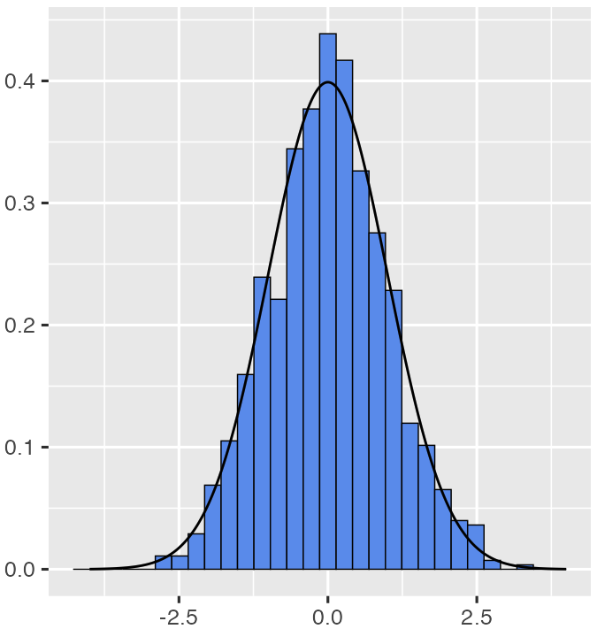
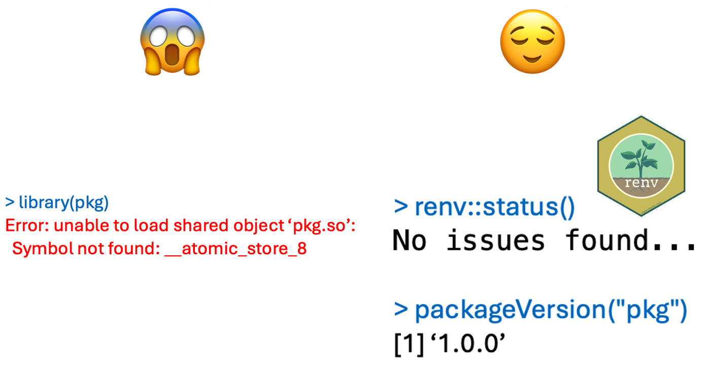
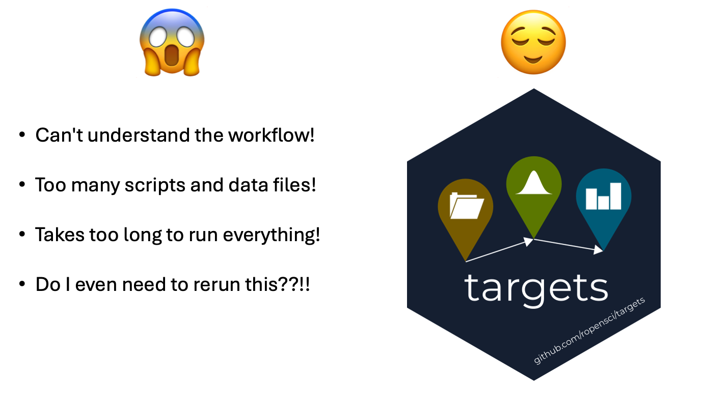

A rediscovery from different field

Will Landau
Background
- Training:
- Bayesian Statistics
- Iowa State University, 2011-2016
- Career:
- Methods and tools for clinical trials
- Eli Lilly and Company, 2016-present

Hidden problems with non-statistical solutions
Hidden problems with non-statistical solutions
Hidden problems with non-statistical solutions
Hidden problems with non-statistical solutions
Hidden problems with non-statistical solutions
Hidden problems with non-statistical solutions
Repetition and long computation

Workflows have interconnected steps.

If you change code or data…

…the downstream steps are no longer valid.

Dilemma: short runtimes or reproducible results?

Pipelines to the rescue!
- A pipeline is a collection of computational steps.
- Each step can depend on previous steps.
- Run upstream dependencies before downstream steps.
- Skip steps whose code and dependencies did not change.
Let a pipeline tool figure out what to rerun.

- Save time while ensuring computational reproducibility.
- Automatic parallel/distributed computing based on the directed acyclic graph.
Pipeline tools

- Existing pipeline tools: https://github.com/pditommaso/awesome-pipeline
- Most not designed for classical Statistics.
- Most are language-agnostic or designed for Python or the shell.
Make-like pipelines for Statistics
targets
- Fundamentally designed for R.
- Supports a clean, modular, function-oriented style.
- Abstracts files as R objects and automatically manages data.
How to use targets
- Write functions.
- Define the pipeline in
_targets.R. - Understand the pipeline.
- Run the pipeline.
- Inspect results.
- Iterate as needed.
Simple example: air quality analysis
Simple example: air quality analysis
Simple example: air quality analysis
Simple example: air quality analysis
Step 1: Write functions.
- Everything that exists in an object.
- Everything that happens is a function call.
John Chambers
- Idiomatic (natural expression of R)
- Clear
- Break down complicated ideas in to manageable pieces.
- Personal shorthand
- Reusable: define once, call from wherever.
Step 1: Write functions.
Step 1: Write functions.
Step 2: Define the pipeline in _targets.R.
use_targets()generates a template_targets.Rfile.- Call
tar_edit()to edit_targets.R.
Step 3: Understand the pipeline.
Step 3: Understand the pipeline.
Step 3: Understand the pipeline.
Step 4: Run the pipeline.
tar_make()
#> ▶ dispatched target file
#> ● completed target file [0.098 seconds]
#> ▶ dispatched target data
#> ● completed target data [0.068 seconds]
#> ▶ dispatched target model
#> ● completed target model [0.002 seconds]
#> ▶ dispatched target plot
#> ● completed target plot [0.011 seconds]
#> ▶ ended pipeline [0.271 seconds]Step 5: Inspect results.
Step 5: Inspect results.
Step 6: Iterate as needed.
Step 6: Iterate as needed.
Step 6: Iterate as needed.
Step 6: Iterate as needed.
Step 6: Iterate as needed.
Step 6: Iterate as needed.
Formidable example: Bayesian model validation
Bayesian MMRM
- MMRM = mixed model for repeated measures.
- Longitudinal data with continuous outcomes.
- Bayesian version used in clinical trials in neuroscience and pulmonology.
Implementation
Computational demands of Stan
- Stan uses Hamiltonian Monte Carlo (HMC) to draw from the posterior distribution.
- HMC is based on a physics simulation!
Computational demands of Stan
- MMRMs are moderately high-dimensional.
- Could take several minutes or hours to fit a single model!
Validation: simulation-based calibration (SBC) checking
- Problem: easy to simulate data correctly, hard to model it correctly.
- Idea: design a simulation where the (estimated) posterior is the same as the (simulated) prior. (Modrák et al. (2023))
- Repeat thousands of times:
\[ \begin{aligned} \theta^{\text{sim}} &\sim p(\theta) \qquad &&\text{1. Draw parameters from the prior.} \\ y^{\text{sim}} &\sim p(y | \theta^{\text{sim}}) \qquad &&\text{2. Draw data given parameters.} \\ \theta^{(1)}, \ldots, \theta^{(M)} &\sim p(\theta | y^{\text{sim}}) \qquad &&\text{3. Draw HMC samples from the posterior} \\ \end{aligned} \]
- Equivalent to integrating out \(\theta^{\text{sim}}\) and \(y^{\text{sim}}\) to get the prior back:
\[ p(\theta) = \int \int p(\theta | y^{\text{sim}}) p(y^{\text{sim}} | \theta^{\text{sim}}) p(\theta^{\text{sim}}) d \theta^{\text{sim}} d y^{\text{sim}} \]
- Use ranks \(\sum_{m = 1}^M I \left [ \theta^{(m)}_i < \theta^{\text{sim}}_i
\right ]\) to check that the posterior and prior agree
- Ranks should be uniformly distributed.
Too much work for one laptop

- Run 1000 replications for each of 6 modeling scenarios.
- For 2 of those scenarios, each rep takes over an hour.
- Sequential computing would take over 3 months!
- Need distributed computing to run models in parallel.
Step 1: Write functions.
run_simulation()depends onget_sbc_ranks(), another user-defined function.
Step 2: Define the pipeline in _targets.R.
Step 2: Define the pipeline in _targets.R.
- Distributed computing is powered by packages
crewandmirai. - https://books.ropensci.org/targets/crew.html
Step 2: Define the pipeline in _targets.R.
Step 2: Define the pipeline in _targets.R.
Step 3: Understand the pipeline.
Step 3: Understand the pipeline.
Step 3: Understand the pipeline.
- Highlight subgraphs (e.g. neighbors of
run_simulation()).
Step 3: Understand the pipeline.
- Zoom in, click, drag, etc.
Step 3: Understand the pipeline.
tar_outdated()
#> [1] "ranks_batch_compound_symmetry"
#> [2] "ranks_moving_average"
#> [3] "ranks_diagonal"
#> [4] "results_diagonal"
#> [5] "prior_diagonal"
#> [6] "ranks_batch_autoregressive"
#> [7] "results_moving_average"
#> [8] "prior_unstructured"
#> [9] "prior_compound_symmetry"
#> [10] "results_subgroup"
#> [11] "prior_autoregressive_moving_average"
#> [12] "results_compound_symmetry"
#> [13] "results_autoregressive_moving_average"
#> [14] "ranks_subgroup"
#> [15] "ranks_compound_symmetry"
#> [16] "prior_autoregressive"
#> [17] "prior_moving_average"
#> [18] "ranks_batch_diagonal"
#> [19] "ranks_batch_subgroup"
#> [20] "ranks_autoregressive"
#> [21] "ranks_batch_moving_average"
#> [22] "ranks_batch_autoregressive_moving_average"
#> [23] "results_unstructured"
#> [24] "ranks_batch_unstructured"
#> [25] "results_autoregressive"
#> [26] "prior_subgroup"
#> [27] "ranks_autoregressive_moving_average"
#> [28] "ranks_unstructured" Step 4: Run the pipeline.
tar_make()
#> ...
#> ▶ dispatched target prior_subgroup
#> ▶ dispatched target prior_moving_average
#> ▶ dispatched target prior_diagonal
#> ...
#> ▶ dispatched branch ranks_moving_average_0622a4a0a1459592
#> ▶ dispatched branch ranks_autoregressive_average_4d6e2b84dfce31bc
#> ● completed branch ranks_unstructured_391a8253aae8fc3e [1.321 hours]
#> ● completed branch ranks_unstructured_6fc2a563c4c2fecc [1.265 hours]
#> ...Behind the scenes: distributed computing
Behind the scenes: distributed computing
Behind the scenes: distributed computing
Behind the scenes: distributed computing
Step 5: Inspect results.
tar_read(ranks_unstructured)
#> # A tibble: 1,000 × 19
#> b_groupgroup_1 b_groupgroup_2 b_groupgroup_3 b_timetime_2
#> <dbl> <dbl> <dbl> <dbl>
#> 1 4104 2573 3593 8346
#> 2 11074 10962 10986 2911
#> 3 9407 10515 9904 2703
#> 4 6878 28 728 9672
#> 5 3467 3365 3510 11599
#> 6 6156 7975 6034 9547
#> 7 6971 5843 1357 11736
#> 8 1289 762 3830 10178
#> 9 8738 6655 10501 2387
#> 10 7985 7380 6802 6918
#> # ℹ 990 more rows
#> # ℹ 15 more variables...Step 5: Inspect results.
- Ranks are roughly uniform, model appears okay.
- https://openpharma.github.io/brms.mmrm/articles/sbc.html
Step 6: Iterate as needed.
Step 6: Iterate as needed.
Recap
- Statistical work comes with scary non-statistical problems.
- Solutions:
- Often come from software engineering.
- Are game-changers Statistics and data science.
- Non-statistical breakthroughs are waiting for statisticians to notice them.
Thanks!
https://wlandau.github.io/LatinR2024
References
- Will Landau, Kevin Kunzmann, Yoni Sidi, Christian Stock (2024). “brms.mmrm: Bayesian MMRMs using ‘brms’”. R package version 1.1.1, https://openpharma.github.io/brms.mmrm/.
- Will Landau (2021). “The targets R package: a dynamic Make-like function-oriented pipeline toolkit for reproducibility and high-performance computing”. Journal of Open-Source Software, 6(57), https://doi.org/10.21105/joss.02959.
- Martin Modrák, Angie H. Moon, Shinyoung Kim, Paul Bürkner, Niko Huurre, Kateřina Faltejsková, Andrew Gelman, Aki Vehtari (2023). “Simulation-Based Calibration Checking for Bayesian Computation: The Choice of Test Quantities Shapes Sensitivity”. Bayesian Analysis. https://doi.org/10.1214/23-BA1404.
© Eli Lilly and Company